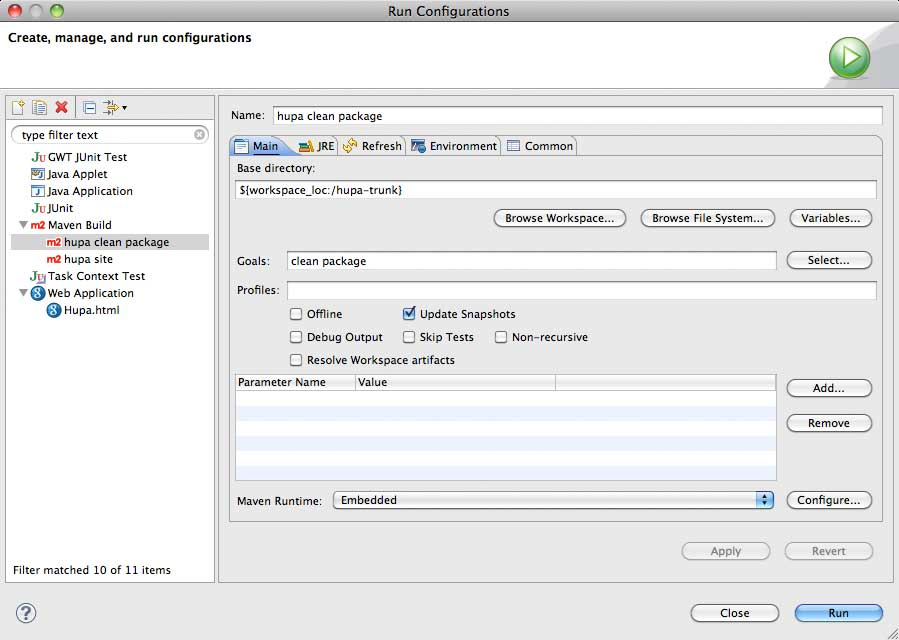
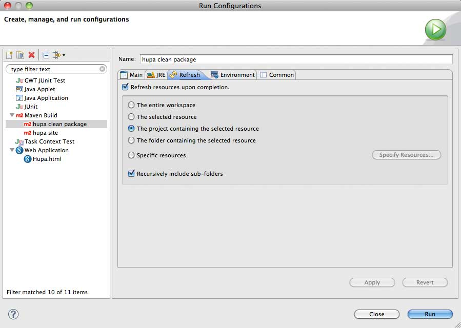

Because Hupa uses maven2 as its build tool, the management of
dependencies is rather simple. You can either run
mvn clean package
from the command line, or use the built-in m2eclipse plugin.
m2eclipse provides you with the ability to create different run configurations for maven. So you can run what you want, when you want, by a single mouse-click. To configure the m2 run configuration, please do a right click on the project name and select Run As -> Run Configurations ...
In the Following Dialog left-click Maven Build, then click on New on
the top. On the dialogs main content area provide the run
configuration now. In the Name field type
hupa clean package
. Uder the Base Directory should be written
${workspace_loc:/hupa-trunk}
(if your project is only named hupa, then it would be
${workspace_loc:/hupa}).

Underneath you should check Update Snaphots
and on the Refresh Tab you
should check Refresh Resources upon
Completion and The Project
Containing the selected Resource.

After all is set, click Apply and then click Run. It will take a hile
to download all the dependencies. Once it is finished, it will refresh
eclipse, and we are on the final step to start it up the first time.
Because Hupa uses the google web toolkit (GWT) it is necessary to
adjust
the output directory of the project. If you don't the Stand alone
google
browser will not be able to pick up the compiled classes. So, to
change
it do a right-click on your project choos Run As -> Web Application. But
beware you will get an error! We do this only because the plugin sets
almost everything up for us. After we get the error right-click on the
project again, and choose Run As -> Run Configurations... then expand
the Web Application Node, go to the Arguments tab and add
-Dhupa.config.file=${project_loc}/server/src/main/webapp/WEB-INF/conf/config.properties
to the VM Arguments Textbox. Click on Apply and close the dialog.
After
that go into the Package Explorer
View and expand server -> src -> main
-> webapp -> WEB-INF -> conf and
double click on config.properties.
Adjust these settings to your liking.
googlemail is setup by default.
Last thing to setup is the projects output path. Do a right-click on the
project and choose Build Path -> Configure Build Path... Under the
Source tab put <your_project_name>/war/WEB-INF/classes in the
output directory textbox.